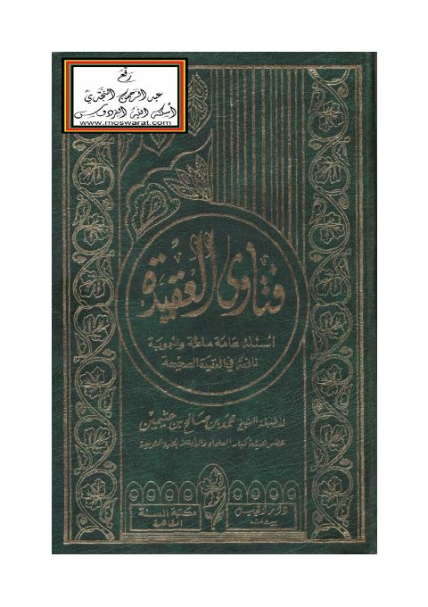

Downloads need an internet connection.
فتاوى العقيدة-ابن عثيمين
Authors: محمد بن صالح العثيمين
Publishers: دار الجيل
**▫️ العنوان: فتاوى العقيدة-ابن عثيمين** ▪️ المؤلف: #محمد_بن_صالح_العثيمين ▫️ الناشر: #دار_الجيل ▪️ تاريخ النشر: 1414هـ 1993م ▫️ بلد النشر: بيروت، #لبنان ▪️ الطبعة: 2 ▫️ عدد الأجزاء: 1 ▪️ الصفحات: 820 ▫️ نوع الوعاء: #كتاب ▪️ التصنيف الرئيسي: #العقيدة_والمذاهب_والأديان ▫️ التصنيف الفرعي: #مذاهب_عقدية ۪